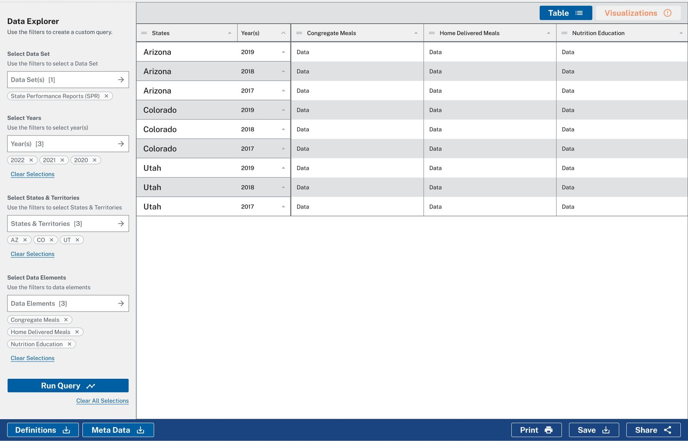
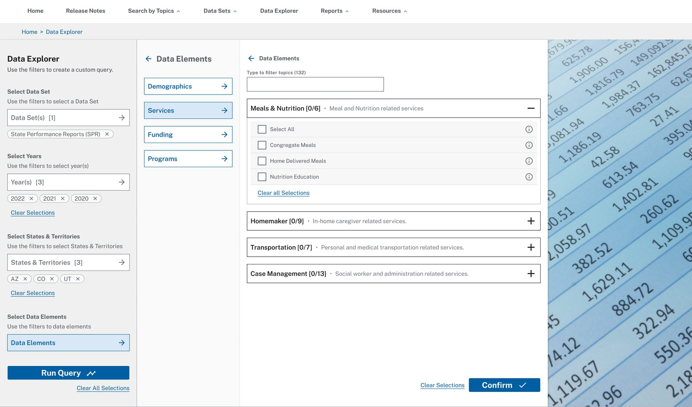
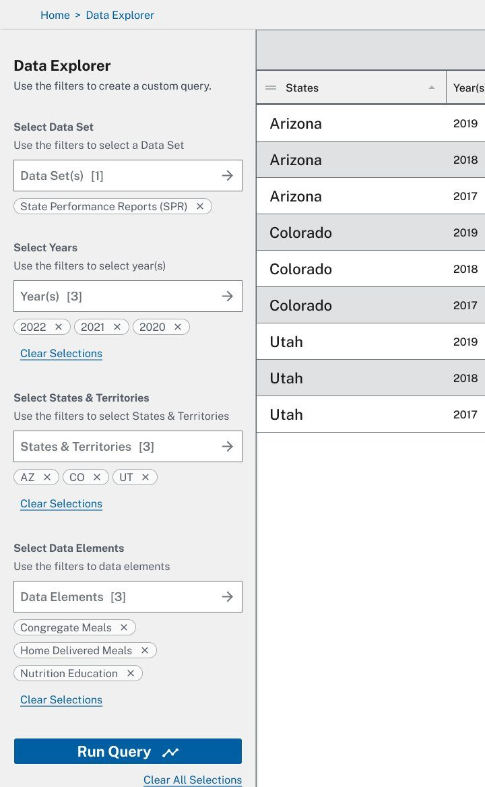
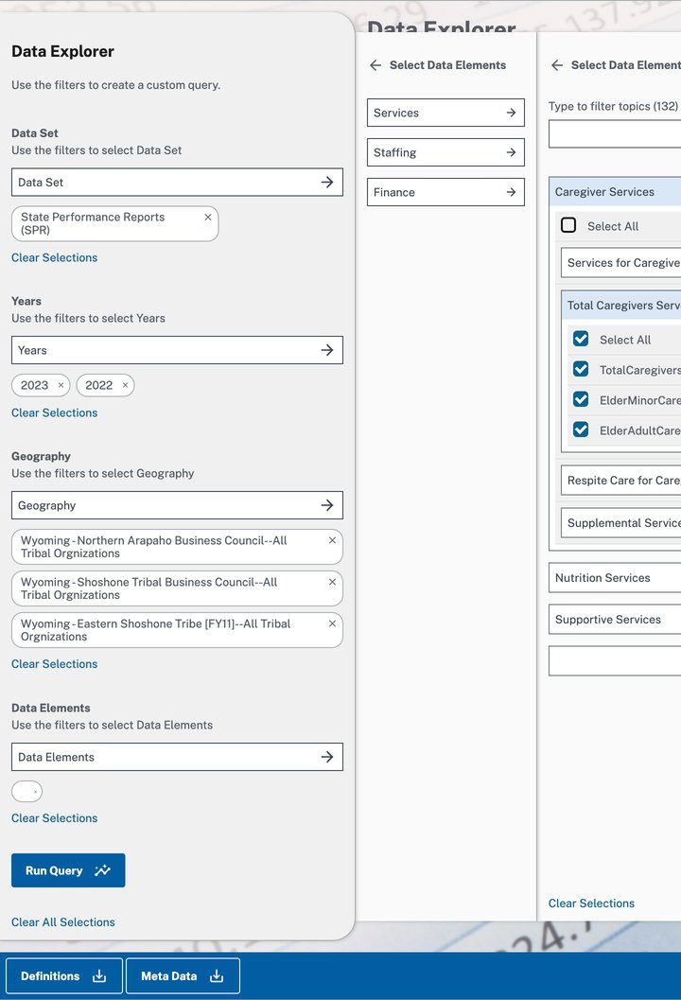
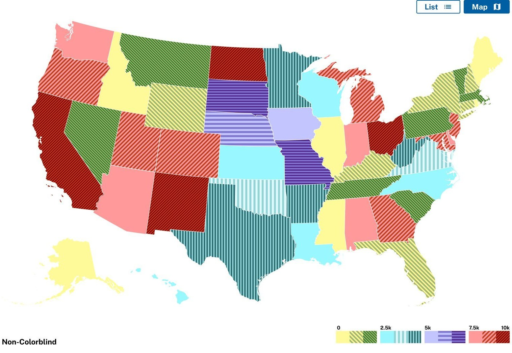
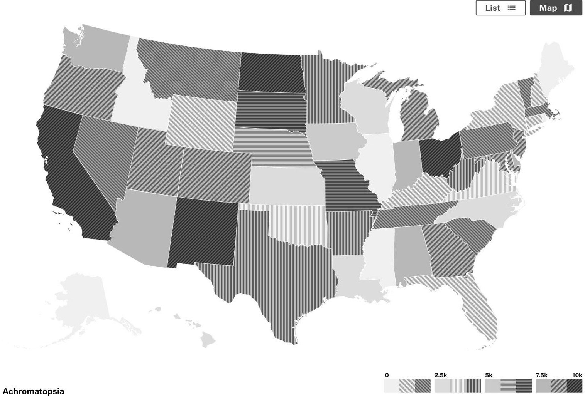
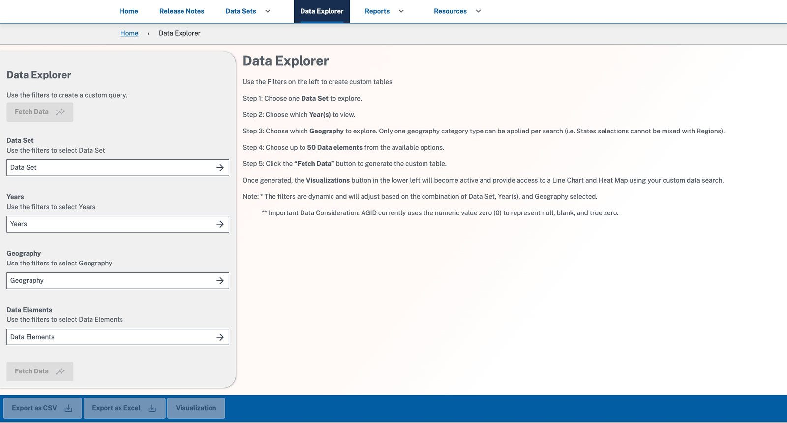

Case study · AGID 2.0 data portal
One question at a time.
AGID 2.0 gives program staff, analysts, evaluators and trainers one place to query federal aging and disability data. As its sole UX/UI designer, I designed a query that asks one question at a time and a heat map built for color-blind readers. The portal shipped and was live as of September 2025.

The problem
The data was all there. Getting it out was not.
Users called the old portal “difficult to navigate, especially for new users.” Data arrived “piecemeal” and “in raw format,” through filters “not as comprehensive as the data itself.”
The research team’s interviews became personas, all staff and partners in the network the portal serves. Their pains became my design decisions.
“So I think simple, simple, simple will help ensure that it’s actually used.”
The explorer
Ask in the order the data needs.
The core requirement asked one tool to search and export data “across one or more years and by one or more geographic locations.”
I put the whole query on one left rail. It asks for a data set, then years, then geography, then data elements. A field that depends on an earlier answer waits for that answer, so every visible field is one the user can fill right now.

What stays
Every answer stays on the rail.
A chip for every answer
Every filter button carries a count, such as Year(s) [3], and every choice becomes a removable chip. Clear Selections resets one filter; Clear All Selections resets the query.
A tree as big as the data
Four buckets open into a tree with a type-to-filter box, Select All at every level and a count on every branch. The live site states the ceiling: “Choose up to 50 Data elements.”
A button that waits
Run Query stays gray until there is something to run, then turns blue once there is a query to run.
Designed, August 2023

Built, May 2024

The map
A map that survives grayscale.
The requirements asked for a “scalable heat map” and an experience accessible under Section 508. A map coded by hue alone loses the readers who cannot tell the hues apart. Pairing every hue with a pattern was my idea, and it shipped.
Twelve steps run from 0 to 10k: four hues, each as a solid, a light stripe and a dense stripe. I checked the map under seven simulated kinds of color vision plus typical vision. The stripes keep their density and direction with no color at all, and the four solids step from light to dark, so even they keep their order.
Typical color vision

No color vision

- Hue names the band: yellow from 0, cyan from 2.5k, lavender from 5k, and pink to red from 7.5k to 10k.
- Direction repeats it: vertical stripes for cyan, horizontal for lavender, and opposite diagonals for yellow and pink. With the color gone, horizontal stripes still mean the 5k band.
Shipped
Built to the mocks, then changed.
AGID 2.0 shipped on the U.S. Web Design System. The May 2024 live site matches the August 2023 mocks almost one-to-one.
I ran usability testing on the designs. After it, the Data Explorer and the navigation were revised with default search settings, so casual users get an answer first.
“An untested design is an unfinished design.”
